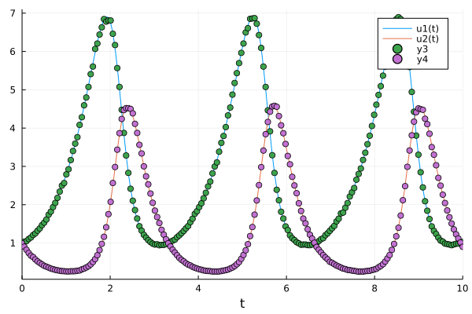
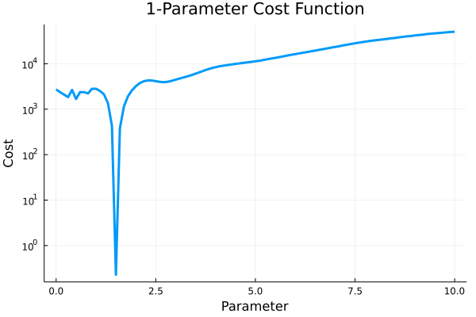

Parameter estimation
Contents
4. Parameter estimation#
DiffEqParamEstim.jl is not installed by default with DifferentialEquations.jl. You can install it via the following script:
using Pkg
Pkg.add("DiffEqParamEstim")
using DiffEqParamEstim
4.1. Estimate a single parameter from the data and the ODE model#
Let’s optimize the parameters of the Lotka-Volterra equation.
using DifferentialEquations
using Plots
using DiffEqParamEstim
using Optim
function lotka_volterra!(du, u, p, t)
du[1] = dx = p[1]*u[1] - u[1]*u[2]
du[2] = dy = -3*u[2] + u[1]*u[2]
end
lotka_volterra! (generic function with 1 method)
u0 = [1.0;1.0]
tspan = (0.0,10.0)
p = [1.5]
prob = ODEProblem(lotka_volterra!, u0, tspan, p)
sol = solve(prob, Tsit5())
ts = range(0, stop=10, length=200)
0.0:0.05025125628140704:10.0
We build a sample data with some randomness.
data = [sol.(ts, idxs=1) sol.(ts, idxs=2)] .* (1 .+ 0.01 .* randn(length(ts), 2))
200×2 Matrix{Float64}:
1.00783 0.993972
1.03456 0.903435
1.04898 0.822819
1.10519 0.739435
1.1447 0.669975
1.20953 0.63198
1.25101 0.571661
1.32168 0.520207
1.38132 0.48115
1.46598 0.442494
1.53132 0.405228
1.61337 0.382796
1.73947 0.358631
⋮
1.14078 2.70069
1.06395 2.49795
1.03856 2.26189
0.984449 2.04431
0.973169 1.84973
0.96031 1.6719
0.942838 1.50848
0.962569 1.35628
0.980033 1.22876
0.984149 1.11972
1.00884 1.01298
1.02966 0.901111
plot(sol)
scatter!(ts, data)

We can simply call build_loss_objective() to build a loss function for the ODE problem with the data.
cost_function = build_loss_objective(prob, Tsit5(), L2Loss(collect(ts), transpose(data)), maxiters=10000, verbose=false)
vals = 0.0:0.1:10.0
plot(cost_function, vals, lw = 3, label=false, yscale=:log10,
xaxis = "Parameter", yaxis = "Cost", title = "1-Parameter Cost Function"
)

The cost function can be used with compatible optimizers. For instance, the ones from Optim.jl:
result = Optim.optimize(cost_function, 0.0, 10.0)
Results of Optimization Algorithm
* Algorithm: Brent's Method
* Search Interval: [0.000000, 10.000000]
* Minimizer: 1.499890e+00
* Minimum: 2.278473e-01
* Iterations: 24
* Convergence: max(|x - x_upper|, |x - x_lower|) <= 2*(1.5e-08*|x|+2.2e-16): true
* Objective Function Calls: 25
result.minimizer
1.4998896351464828
We have recovered the true parameter of 1.5!